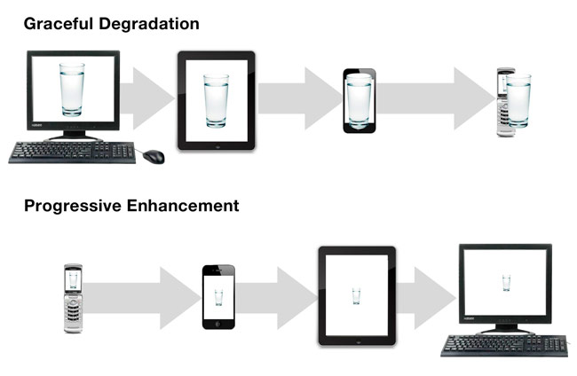

Responsive Development
By Ted Whitehead
What is Responsive
Responsiveness is what a website does when it's loaded into an unknown browser on an unknown device by an unknown individual. It's how you deal with "the most hostile software development environment ever imagined" (via Douglas Crockford). Like progressive enhancement it's a strategy that frees you to work with the web rather than fight against it.
Andy Hume
It's Not Perfect
It's important to understand and accept that current technology and methodology won't always get you where you need to be. Pretending we can create a perfect solution just because we've discovered media queries is as dangerous as ignoring responsive design altogether.
Andy Hume
Responsive vs. Adaptive
- adaptive example
- Coined by Marc van den Dobbelsteen in 2006
- An early technique for creating flexible sites utilizing a combination of fixed and fluid grids
- This worked in the past when there were few mobile devices with standard screen sizes, but it isn't a best-practice today given the diversity of mobile devices on the market. An adaptive site will not be able to make best use of space across all devices.
- responsive example
- Coined by Ethan Marcotte in 2010
- It was originally defined as using fluid grids, flexible images, and media queries to deliver elegant visual experiences across all devices (more examples).
- Today, responsive has become an umbrella term for all aspects of creating websites optimized for devices of any size or capability.
- Below are two excellent presentations on responsive design by two experts in the area:
Progressive Enhancement vs. Mobile First
- progressive enhancement
- Coined by Steven Champeon in 2003
- Bottom-up strategy of developing for the lowest common denominator first, then enhancing the site for browsers with additional capabilities (e.g. touch events and geolocation). See this gov.uk write-up for more details.
- The opposite of graceful degradation, which takes the top-down approach

Progressive Enhancement vs. Mobile First
- mobile first
- Coined by Luke Wroblewski in 2009
- Same idea as progressive enhancement, but with an additional focus on content priority
Content Priority
Example documentation from Brookings
(numbers correspond to the source order in the small screen view)
Media Queries vs. Breakpoints
- media queries
- Part of the CSS3 specification, they gives us the ability to conditionally apply styles based on various device properties, such as screen width, height, and resolution.
- Supported by Opera in 2007, Safari in 2008, Firefox in 2009, Chrome in 2010, and IE in 2011 (full browser support table)
- They became a W3C recommended standard in 2012
/* These styles only apply when the viewport is >= 500px */
@media only screen and (min-width: 500px) {
.columns { float: left }
}
- breakpoint
- The width at which a media query takes effect, or is no longer applied
- Breakpoints should be determined by the content, not the most common device sizes. This will ensure the best possible layout on any device, present or future.
- Designers should take typography into account when deciding breakpoints to ensure optimal readability at any width (see Logical Breakpoints For Your Responsive Design)
Choosing Breakpoints
...breakpoints should be defined by ‘when it looks appropriate’ rather than conforming to device dimensions, which date very, very quickly.
Elliot Jay Stocks
Smithsonian was caught off-guard when the iPhone 5 was released, since the longer phone was triggering desktop mode in landscape orientation (Trac ticket).
Designing for specific devices is a fool's errand…
…and will only get worse.
Breakpoint Example
Smashing has 5 main breakpoints—500px, 800px, 1020px, 1120px, and 1450px—none of which target a particular device.
Responsive Tools
These tools make it much easier to test how a responsive site looks at various screen sizes:
Prototyping is the New Photoshop
Coding a Responsive Layout
The web is responsive on its own—by default. It's us that's been breaking it all these years by placing content in fixed-width containers.
Andy Hume
In the following examples, we will walk through different approaches to coding a responsive layout using media queries.
Embrace the Flexibility
of the Web
The web's greatest strength, I believe, is often seen as a limitation, as a defect. It is the nature of the web to be flexible, and it should be our role as designers and developers to embrace this flexibility, and produce pages which, by being flexible, are accessible to all.
John Allsopp, 2000
With Responsive Comes Additional Challenges
- High resolution devices (list)
- Touch
Solving These Challenges Can Create New Ones
In order to optimize performance for low bandwidth devices, we need to change the way we load assets. Instead of loading everything that may be needed up front, we load only what's needed at any given time. However, loading assets asynchronously can add additional complications.
Adding web fonts to a site adds complexity, since we don't know exactly when the font will be loaded. Sometimes, we must add code to determine when the font is ready to use in order to trigger other code that depends on it (HHMI example).
RWD Tech Audit
- Browser spec, targeted devices
- Content priority—this informs how we write the HTML
- Functionality audit
- Is there anything that won't work on touch devices (e.g. lightboxes, hover-based nav, Flash)?
- If so, what do we do on those devices?
- Will we support touch gestures, like swipe?
- Lots of other stuff…
Miscellany
- Always consider best and worst-case scenario content
- When in doubt, prototype it
- Font icons are better than image icons
- Don't load social buttons until requested (plugin)
- Embrace CSS3 capabilities of mobile devices (animations, patterns, 3D effects)
- Read all of the resources on This is Responsive